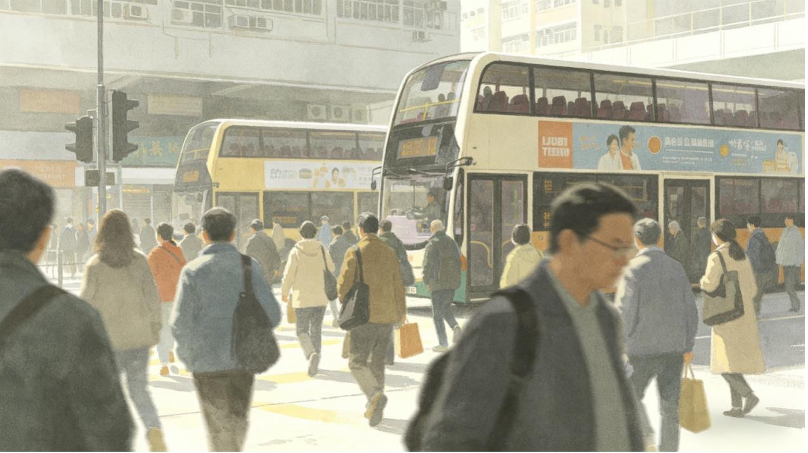

綠色運輸的承諾與差距
——電車計劃帶來了多少改變？
早上八點，鬧鐘第三次響起。你匆匆出門，在路邊巴士站停下。一輛雙層柴油巴士從你身邊駛過，排氣管噴出一股熱風，帶著焦油味。你下意識屏住呼吸，但已經晚了。
過去二十年，香港路邊空氣中的二氧化氮和微細懸浮粒子濃度下降了36%至88%——這看起來是巨大的進步。但當你站在路邊，數位是另一回事：如今的NO₂濃度仍然超出世界衛生組織安全標準5.4倍，PM2.5超出2.8倍。
過去十年，香港的電動車數量從幾千輛暴漲到近15萬輛，私家車電動化率超過70%。可你每天等車時聞到的空氣，似乎依舊很污濁。
這篇報導會用數據幫你算一筆賬：你的通勤路上，呼吸的每一口空氣，到底有多「毒」？而那個號稱要「全面電動化」的計劃，為什麼還沒讓你吸到乾淨的空氣？
第一章
電車計劃的成績單——電車計劃是否讓空氣變好了？
近年來，香港街頭的電動私家車越來越多，道路交通能源結構正發生肉眼可見的變化。從數據來看，自2021年起，香港電動車登記數量進入爆發式增長，短短幾年間從不足一萬輛攀升至近15萬輛。與此同時，過去十年間，路邊空氣中的二氧化氮（NO₂）和微細懸浮粒子（PM2.5）年均濃度，也呈現出持續下降的趨勢。
從時間線上看，電動車普及與空氣品質改善幾乎同步發生，很容易讓人將二者直接掛鉤，得出「電車多了，空氣自然變清了」的結論。
圖1 香港電動車數量與路邊汙染物濃度變化對比
圖註：圖中綠色柱狀為香港電動車登記數量，橙色、紅色曲線分別代表路邊氮氧化物、PM2.5年均濃度。數據顯示，污染物濃度的快速下降期（2015-2020年）與電動車大規模普及期（2021年後）存在明顯時間錯位，反映出空氣品質改善與私家車電動化並非直接線性關聯。
數據顯示，香港路邊空氣污染物濃度下降幅度最顯著的時期，集中在2015–2020年。而在這五年裡，香港電動車保有量始終處於低位，遠未形成規模。這意味著，早期空氣品質的大幅改善，核心驅動力並非私家車電動化，而是淘汰老舊柴油商用車、收緊燃油車排放標準等強制性管控政策。這些措施直接瞄準了路邊污染的「大頭」——柴油貨車、巴士和小巴，帶來了立竿見影的減排效果。
2021年之後，電動車數量迎來爆發式增長，三年間從不足一萬輛漲到近15萬輛，但NO₂和PM2.5的下降幅度卻明顯放緩，幾乎進入平台期。也就是說，當大家都以為電車會成為空氣改善的「主力」時，數據卻告訴我們：僅靠私家車電動化，已經很難再推動空氣質量的顯著提升。
第二章
全港空氣污染空間格局與時間脈搏
核心城區持續高污染，通勤暴露風險突出
如果全港空氣在改善，「髒空氣」究竟集中在哪些地方？
2025年全港空氣質素監測數據顯示，高濃度污染物高度集聚於人口密集、交通流量大的核心城區。依據世界衛生組織2021年《全球空氣品質指南》，二氧化氮（NO₂）年均濃度指導值為10 μg/m³，微細懸浮粒子（PM2.5）為5 μg/m³。
從二氧化氮分佈來看，核心商業區與交通樞紐為主要污染高值區。銅鑼灣、旺角、中環監測站年均濃度分別達65.42 μg/m³、64.42 μg/m³、63.00 μg/m³，均為WHO AQG level的6倍以上；與之形成對比的是，塔門、南區、將軍澳等遠離核心交通流的區域，二氧化氮年均濃度區間為8.25–23.75 μg/m³，空氣品質顯著優於城區。
圖2 2025年香港各監測站二氧化氮（NO₂）年均濃度空間分布圖
圖註：2025年香港全港空氣監測站二氧化氮（NO₂）年均濃度空間分布圖。數據來源：香港環境保護署2025年空氣質量監測數據；單位：μg/m³；圖例按年均濃度梯度分級展示。
微細懸浮粒子（PM₂.₅）的空間分佈與二氧化氮高度吻合，同樣呈現核心城區高、近郊及偏遠區域低的格局。中環、銅鑼灣、旺角PM₂.₅年均濃度分別為20.67 μg/m³、18.54 μg/m³、17.54 μg/m³，達到WHO指導值的3–4倍；屯門、北區、中西區濃度處於15–17 μg/m³區間；塔門、沙田、深水埗等站點則控制在13–14 μg/m³，為全港較低水準。
圖3 2025年香港各監測站微細懸浮粒子（PM₂.₅）年均濃度空間分布圖
圖註：2025年香港全港空氣監測站微細懸浮粒子（PM₂.₅）年均濃度空間分布圖。數據來源：香港環境保護署2025年空氣質量監測數據；單位：μg/m³；圖例按年均濃度梯度分級展示。
全港空氣質量的整體改善，未能消除核心通勤區域的高污染暴露問題。市民日常出行的核心商圈與主幹道，仍是NO₂與PM2.5雙重超標的重點區域。
被均值掩蓋的污染：香港路邊空氣的24小時真相
當全港整體空氣質量數據持續改善，被均值掩蓋的污染真相，正藏在每個香港人的通勤時間軸裡。兩張24小時監測圖表，清晰勾勒出路邊空氣的真實脈搏——這些看不見的「毒氣高峰」，恰恰與我們的日常軌跡完全重合。
圖4 二氧化氮NO₂濃度24小時演變圖
圖註：二氧化氮濃度的雙高峰期（早上8至10時及傍晚16至19時），與本港市區日常上下班通勤的交通繁忙時段高度吻合。
工作日的藍色曲線呈現出兩座觸目驚心的高峰：早8-10點、晚6-8點，濃度劇烈攀升，直逼120μg/m³。週末的紅色曲線則打破了「休息日污染緩解」的慣性認知：週六早晨依然出現明顯的小高峰，唯有周日的曲線最為平緩。
這三組截然不同的走勢，背後藏著香港柴油車流的「污染密碼」——柴油巴士與貨車的尾氣排放，正是香港地區二氧化氮的主要來源。早、晚高峰的峰值，恰好對應通勤時段柴油巴士發車最密集、重型貨車穿梭最頻繁的時刻；週六的小高峰，既源於香港獨特的「長短周」工作制與服務業返工潮，也因大量柴油貨車湧入鬧市區，為週末消費熱潮備貨；而周日曲線的平緩，正是工地停工、重型貨車熄火後，空氣品質立刻給出的積極反饋。這直觀證明，重型柴油車的運作，正是路邊污染的核心開關。
圖5 微细悬浮粒子PM2.5浓度24小时演变图
圖註：微細懸浮粒子（PM2.5）濃度24小時演變圖。該粒子濃度在日間時段（約中午至傍晚）普遍維持在較高水平，反映出市區日間頻繁的商業活動與持續的車流排放具備明顯的累積效應。
如果說二氧化氮是直觀的「污染信號」，PM2.5則是更隱蔽的「隱形傷害」。監測數據清晰顯示，PM2.5的24小時走勢與NO₂高度同步，兩者的高峰幾乎完全重疊。這意味著，即便你週末特意前往郊野公園「洗肺」，也難以抵消週一至週五在路邊通勤、等車時吸入的有害顆粒。這些微米級的污染物會深入呼吸道深處，而路邊商用車一日不完成綠色轉型，普通市民的每一次路邊呼吸，都無法避開這場持續的健康衝擊。
第三章
錯位的「綠化」——為什麼路邊污染改善不達預期？
電動車數量的快速增長，並未同步帶來路邊空氣的明顯改善。問題不在於「有沒有變綠」，而在於誰在變綠。
圖6 各車型電動化進度（百分比堆疊柱狀圖）
圖註：雙層巴士包括KMB、CityBus等專營及非專營巴士；輕型巴士包括公共及私人小巴；貨車包括輕型、中型及重型貨車等。
截至2026年1月，香港路面交通的電動化轉型正呈現出一幅極具反差的圖景：私家車電動化率已達24.88%，成為推進最快的車型；但高頻運行的商用車輛——包括專營及非專營雙層巴士（如KMB、CityBus）、公共及私人輕型小巴，以及輕型、中型、重型貨車——電動化比例卻普遍低於1.5%，部分車型甚至接近於零。
這種「家用車跑得快、商用車原地踏步」的差異，直接導致了治理行動與污染源頭的嚴重脫節。香港科技大學一項針對路面交通排放的精細測算數據，揭開了這一錯位的核心矛盾：在工作日氮氧化物（NOx）排放中，貨車佔比44.4%，巴士佔比36.9%，兩者合計高達81.3%；而包括私家車在內的其他所有車輛，總排放貢獻不足20%。
| 車型 |
污染貢獻率（NOx） |
電動化進度（2026年1月） |
| 巴士 + 貨車 |
81.3% |
約2.9% |
| 私家車 |
<20% |
24.88% |
結構性錯位由此形成：高排放車輛電動化進度最慢，而電動化進展最快的車型，其排放貢獻相對較低。因此，路邊污染改善不達預期，並非因為電動化不足，而是因為電動化尚未觸及主要排放源。真正決定通勤者暴露水準的那部分車隊，仍然停留在柴油時代。
第四章
為什麼商用車電動化推進如此緩慢？
截至2026年1月數據顯示，香港私家車電動化率已達24.88%，轉型勢頭迅猛，但巴士、貨車及小巴等商用車的電動化比例普遍低於1.5%，部分接近於零。這種鮮明反差的背後，答案集中在兩道難以逾越的坎上：充電設施嚴重不足，以及電動巴士採購成本過高。
充電設施不足
約9萬輛商用車僅可共用約2650個適用充電樁，平均34輛車爭搶1個充電樁
成本壓力過高
電動巴士價格較柴油巴士高出約50%，前期採購成本達450萬港元
第一道坎：充電樁缺口——商用車「無樁可充」的現實困境
充電設施的供給缺口，是制約商用車電動化的首要瓶頸。截至2025年12月，全港公共充電樁總數約為16,435個，但結構分佈嚴重失衡，無法匹配商用車的運營需求。
數據顯示，全港16,435個公共充電樁中，中速充電樁佔比超六成（約10,671個），但這類充電樁充滿一輛電動小巴需2-4小時，完全無法滿足巴士、小巴每日高頻次運營、多次補電的核心需求。商用車真正依賴的快速及高速充電樁，供給卻極度稀缺：全港快速及高速充電樁僅2,650個。
更嚴峻的是，有限的快速、高速充電樁還存在「可用率低」的問題。這些充電樁大多分佈在商場、私人停車場，受限於車輛高度、轉彎半徑及開放時間，真正適配商用車（尤其是雙層巴士、重型貨車）使用的數量大幅縮水。
圖7 香港商用車與可適用充電樁數量對比
圖註：數據顯示，全港約9萬輛商用車僅可共用約2650個適用充電樁，供需差距極為懸殊。上圖直觀呈現了商用車數量與可用充電樁數量的巨大差距——34輛車爭搶1個充電樁，「無樁可充」成為商用車電動化的首要堵點。
第二道坎：採購成本——電動巴士比柴油車貴一半的經濟壓力
即便充電難題未來得到緩解，公交公司仍面臨另一重現實障礙：電動巴士的採購價格遠超傳統柴油巴士，前期投入壓力巨大。
根據團結香港基金的數據測算，傳統柴油巴士的單價約為300萬港元，而電動巴士的價格高出約50%，即約450萬港元。其中，雙層電動巴士的實際採購價更高，區間在480萬至620萬港元之間。九巴此前亦公開表示，電動巴士的成本較柴油巴士「貴逾一半」。
儘管從長期運營來看，電動巴士更具經濟性——每公里電費僅為油費的約27%，但高額的前期採購成本仍讓運營利潤微薄的公交公司望而卻步。目前，政府雖已通過新能源運輸基金資助約600輛電動巴士，但全港專營巴士總數約6,000輛，資助比例僅約十分之一，難以覆蓋整體轉型需求。
圖8 香港柴油巴士與電動巴士採購成本對比
圖註：數據顯示，電動巴士單價約450萬港元，較柴油巴士高出約50%，前期投入壓力顯著。
政策在行動：2028–2035年充電設施藍圖落地
針對充電樁不足的核心痛點，香港政府已逐步意識到問題的緊迫性，並在近年密集推出多項扶持措施，為商用車電動化鋪路。
2025年，財政預算案宣佈推出3億元高速充電樁鼓勵計劃，明確目標在2028年底前提供3,000支高速充電樁；同年施政報告進一步加碼，承諾額外新增3,000支高速充電樁，並推出6幅充電站專用用地。2026年初，九龍灣、火炭兩個由油站轉型的高速充電站已正式投入服務，共提供28支高速充電樁，且明確標註可供商用電動車使用。
2026年2月發佈的《電動車普及化路線圖更新版》，進一步明確了長期發展目標：
- 2030年，全港高速充電樁數量不少於4,000支
- 2035年，全港高速充電樁數量增至約10,000支
圖 9 香港商用車充電設施中長期規劃 (2028-2035)
圖注：香港政府公佈的 2028-2035 年高速充電樁建設目標。 計劃 2028 年達 3000 支、2030 年不少於 4000 支、2035 年增至約 10000 支，為商用車電動化鋪路。
政府已為未來十年的高速充電樁建設繪製了清晰藍圖。儘管當前進度仍處於起步階段——截至 2026 年 2 月底，高速充電樁鼓勵計劃共獲批 489 支，其中 20 支 已投用，但政策方向明確，增長趨勢清晰，適用於商用車的充電樁數量正逐步提升。
充電樁供給不足、採購成本高企——兩道坎的疊加，精準解釋了為何香港商用車電動化進程遠遠落後於私家車。
值得肯定的是，政府已將治理重心從私家車轉向商用車，在充電設施建設和購車資助上拿出了實質性舉措。2026年2月更新的《電動車普及化路線圖》首次明確承認：「現階段電動商用車在技術和市場的發展整體仍然處於初期階段，成熟條件不如電動私家車。」——正視差距，正是解決問題的第一步。
要讓香港路邊空氣真正改善，讓每一位在巴士站等候的市民少吸一口柴油尾氣，商用車電動化必須邁出更實質性的步伐。如今，政策已就位，藍圖已繪好，而這場關乎城市呼吸健康的轉型，仍需持續發力、步履不停。